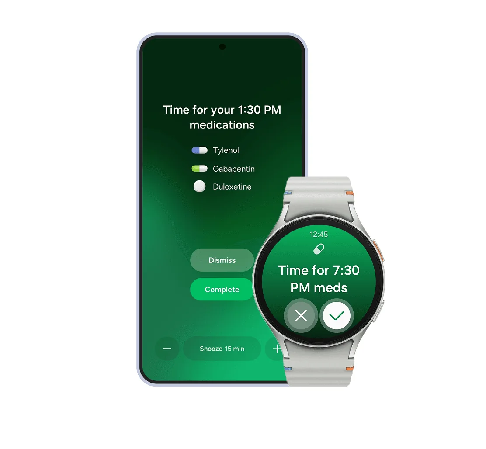
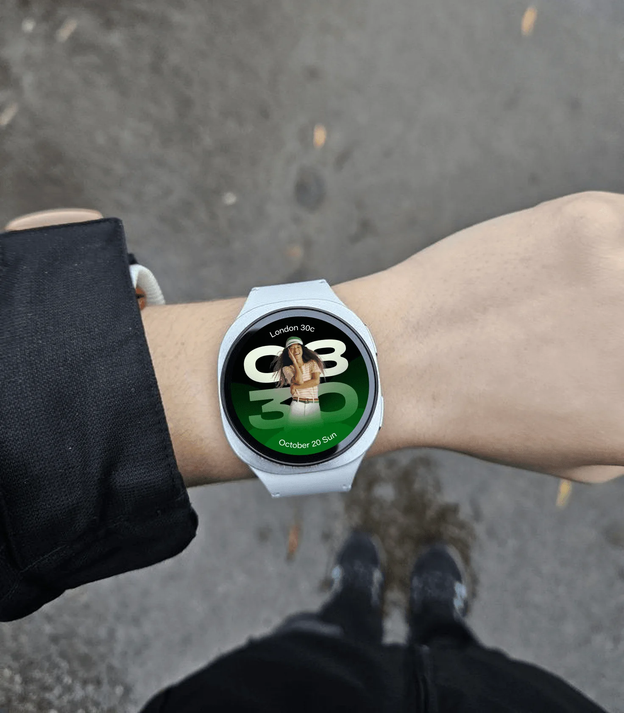
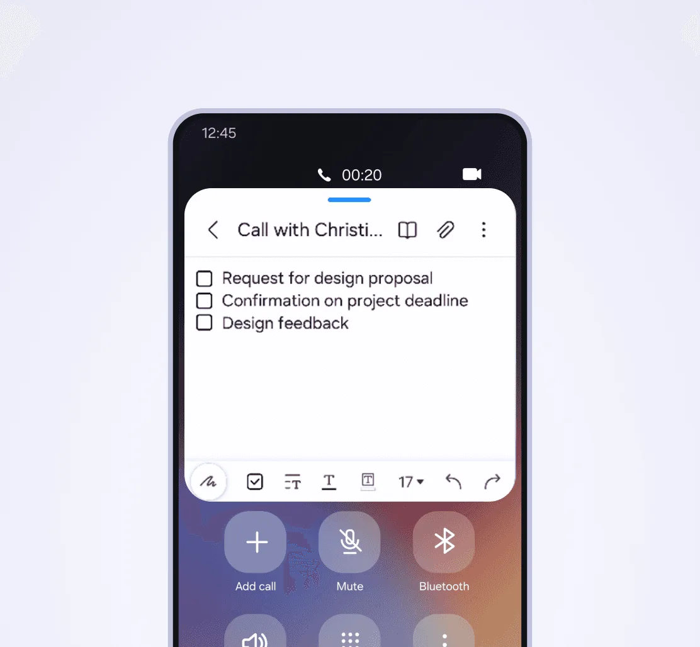
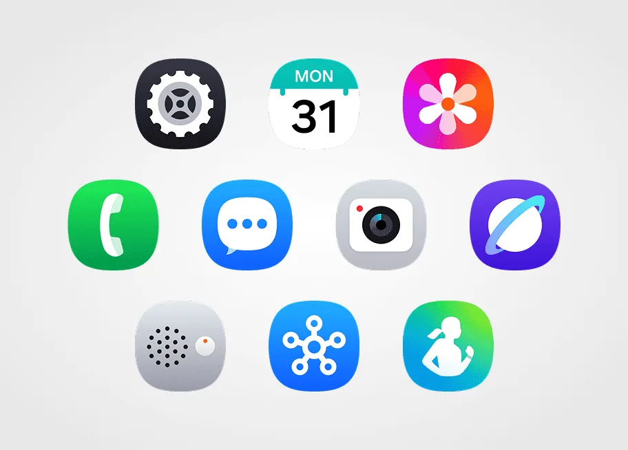
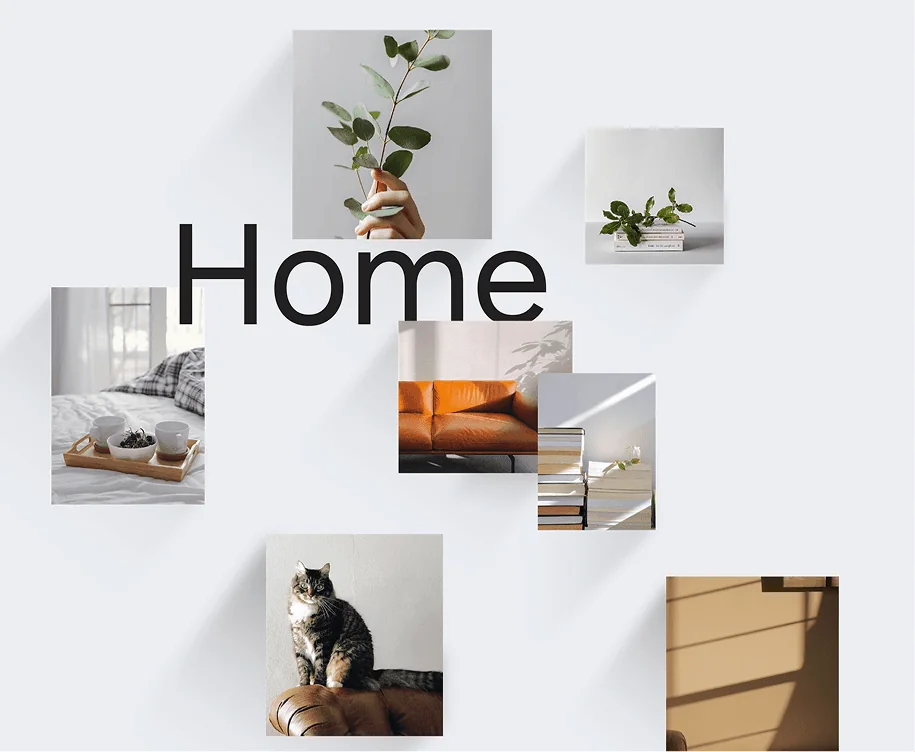
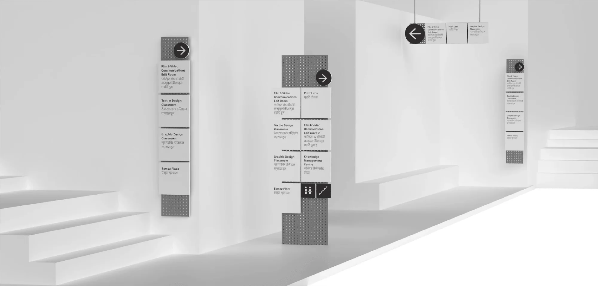
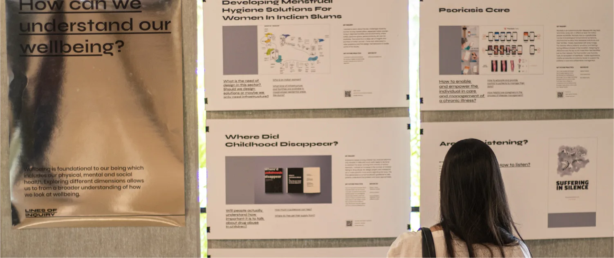

Chandik A Chandran
Chandik A Chandran
I tend to think a lot about why we build things, not just how, and I’m usually somewhere between observing, reflecting, and trying to make sense of it all. I enjoy creating, but I’m equally comfortable pausing, stepping back, and letting ideas take the time
I spent nearly 4 years at  Samsung Design Delhi, shaping system-level UX for mobile and wearables, from research to shipped features. Before that, I spent over a year at
Samsung Design Delhi, shaping system-level UX for mobile and wearables, from research to shipped features. Before that, I spent over a year at  Polygon Design Inc., building its brand from the identity and packaging to the online storefront. And it all started with graphic design at
Polygon Design Inc., building its brand from the identity and packaging to the online storefront. And it all started with graphic design at  NID Ahmedabad.
NID Ahmedabad.
Samsung Design Delhi 2022 – 2026
Visual Experience Designer

Samsung Health India / Shipped · iF Design Award 2026 Supported partner integration with TATA 1mg, enabling reliable medicine data from one of India’s largest inventories, while ensuring clarity & consistency.
Galaxy Watch Face Design Explorations / Visual exploration Visual explorations for analogue based and personal photo based watch faces for next generation of Galaxy watches
In-Call Notes / Shipped New UX touchpoint to launch during call without leaving phone application. Additional touchpoints to increase engagement and visibility Business Caller ID / Shipped
Samsung’s in-house solution against fighting spam calls by partnering with network carriers directly. UX implementation support for multiple carriers across multiple regions.
Business Caller ID / Shipped
Samsung’s in-house solution against fighting spam calls by partnering with network carriers directly. UX implementation support for multiple carriers across multiple regions.

One UI 7 Native Icons Strategy / Research Understanding current pain points of Samsung’s Android skin through competition benchmarking & defining next philosophy.
Future One UI Visual Design Exploration / Visual exploration Understanding current pain points of Samsung’s Android skin through competition benchmarking & defining next philosophy.Polygon Design Inc. 2021 – 2022
Graphic Designer
National Institute of Design, Ahmedabad Graduated 2021
B. Des projects

Wayfinding system concept at NID / Academic Understanding the fundamentals of wayfinding, how it should adapt towards purpose and building a new dynamic wayfinding system for a university where designations of rooms are not constant, frequency of events hosted are high with lots of visitors.
Lines of Inquiry, Annual Design Show 2020 / Exhibition · 2020 Visual identity and exhibition for NID’s Annual Design Show at the 40th Convocation, curating the year’s best student work as a series of questions, or lines of inquiry.About
-- {“HELLO”}
I’m Chandik A Chandran

I ask ‘why’ before ‘how’. Most of my work happens in the pause: observing, questioning and making sense of things, so what I make feels considered for the person using it, whether it’s a medication reminder, a watch face or a phone call.
-- {“OFF THE CLOCK”}